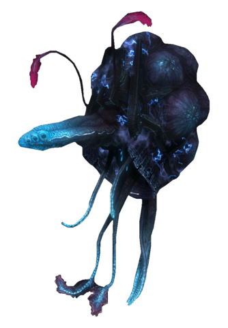

Huragoks
Die Huragoks sind eine Spezies die Künstlich von den Blutsvätern herrgestellt wurden. Sie verfügen über keinen eigenen Willen und arbeiten stehts nach Protokollen die sie von den Blutsvätern bekommen haben. Sie können alles und jeden in kurzester Zeit reparieren und/oder verbessern.

Quellen und weiter Informationen
Huragok, Halo wikia